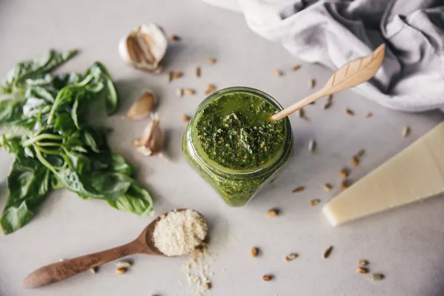

Pesto

Today, we are going to learn how to make a deliciously simple basil pesto! Below you will find the directions, as
well as an ingredient list with everything that you will need.
Ingredients
- 1 cup fresh basil basil.
- 1 cup parmesan cheese. Grating your own parmesan cheese is recommended here for a better final product.
- 1/3 cup of olive oil. (Add more if desiring a thinner texture.)
- Salt to taste.
Steps
- Put your basil, parmesan cheese, and olive oil in a blender.
- Pulse blender until your desired texture had been reached.
- Add salt to taste and stir well.
That's it! You have successfully made basil pesto from scratch! Congratulations and enjoy!
Return to homepage